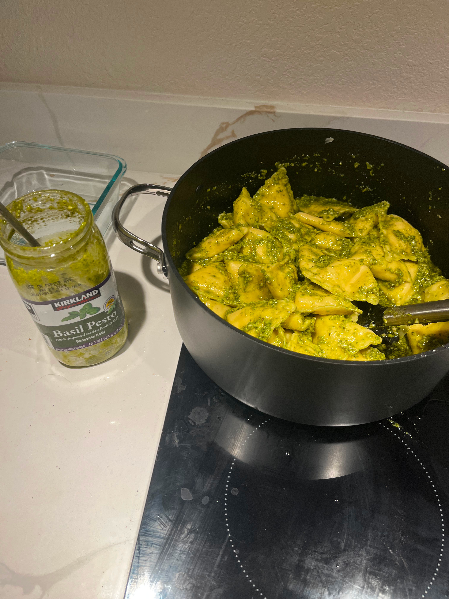

Recipe Archive
Pesto Pasta

Description
Just combine cooked pasta with pre-prepared sauce. Best used to meal prep.
Note: Costco has good ingredients in bulk available.
Ingredients
Pasta
Pesto Sauce
Steps
1) Heat water to rolling boil.
2) Cook pasta to recommended time
3) Drain pasta and simmer sauce in the now empty pot.
4) Mix cooked pasta with sauce to heat.
5) Do the dishes.